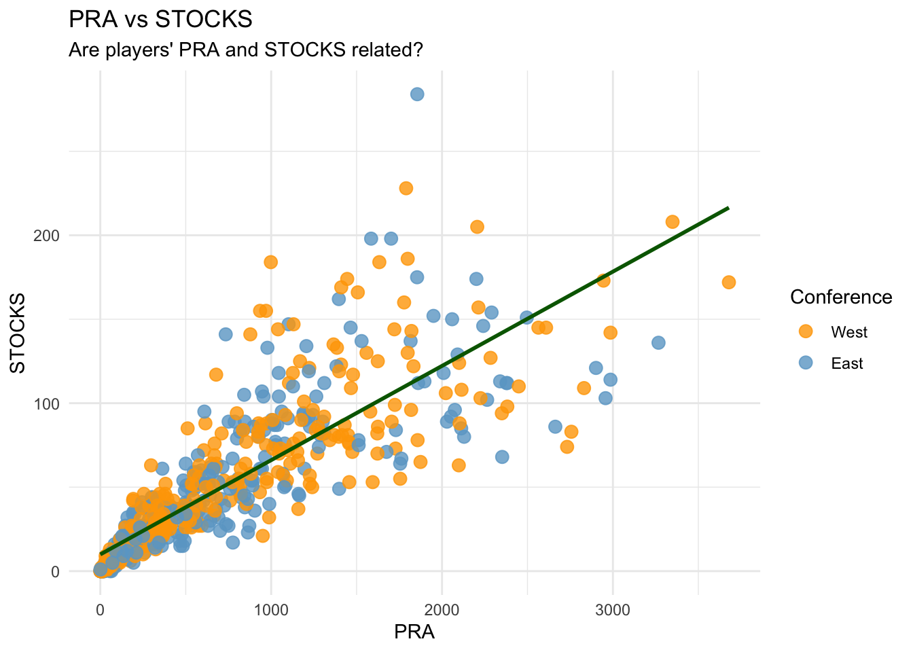
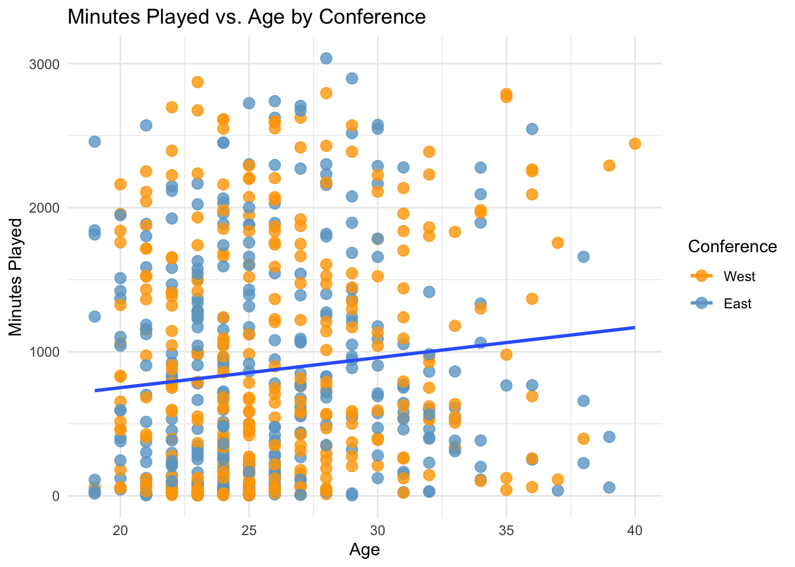
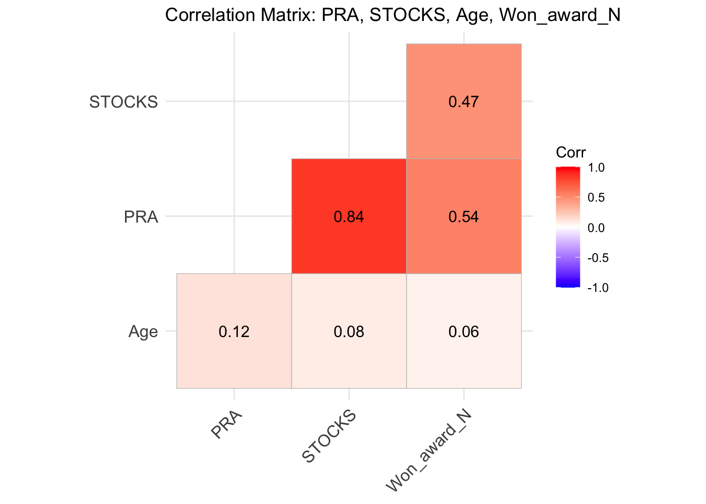

library(tidyverse)
library(ggplot2)
library(Hmisc)
library(readxl)
library(skimr)
library(ggcorrplot)
library(GGally)
library(ppcor)
library(knitr)Assignment 4 - NBA Analytics
Introduction
The NBA season is about to begin, and I have just been hired as a Data Analyst for the National Basketball Association. Commissioner Adam Silver is asking me for insights into last year’s team performances — specifically, how offensive and defensive metrics relate to one another, and whether teams from the Eastern and Western Conferences differ in their overall performance.
Using real-style NBA data from all 30 teams, my job is to build a reproducible analysis in RMarkdown that loads, cleans, visualizes, and analyzes the data to uncover meaningful patterns.
Step 1: Loading & Preparing the Data
bball_function <- function(x){
basketball<- read_xlsx("NBA Team Total Data 2024-2025.xlsx", sheet = x)
basketball$Team <- x
basketball$Won_award<- ifelse(is.na(basketball$Awards),"No","Yes")
basketball$PRA<- basketball$PTS + basketball$TRB + basketball$AST
basketball$STOCKS<- basketball$STL+ basketball$BLK
return(basketball)
}
team_names<- excel_sheets("NBA Team Total Data 2024-2025.xlsx")
all_data<- lapply(team_names, bball_function) %>% bind_rows()all_data %>% head(n=5) %>% kable()| Rk | Player | Age | G | GS | MP | FG | FGA | FG% | 3P | 3PA | 3P% | 2P | 2PA | 2P% | eFG% | FT | FTA | FT% | ORB | DRB | TRB | AST | STL | BLK | TOV | PF | PTS | Trp-Dbl | Awards | Team | Won_award | PRA | STOCKS | Pos |
|---|---|---|---|---|---|---|---|---|---|---|---|---|---|---|---|---|---|---|---|---|---|---|---|---|---|---|---|---|---|---|---|---|---|---|
| 1 | Jalen Wilson | 24 | 79 | 22 | 2031 | 246 | 620 | 0.397 | 122 | 362 | 0.337 | 124 | 258 | 0.481 | 0.495 | 135 | 165 | 0.818 | 75 | 195 | 270 | 145 | 40 | 5 | 79 | 164 | 749 | 0 | NA | Nets | No | 1164 | 45 | NA |
| 2 | Keon Johnson | 22 | 79 | 56 | 1925 | 303 | 779 | 0.389 | 126 | 401 | 0.314 | 177 | 378 | 0.468 | 0.470 | 107 | 139 | 0.770 | 63 | 234 | 297 | 175 | 82 | 30 | 116 | 209 | 839 | 0 | NA | Nets | No | 1311 | 112 | NA |
| 3 | Nic Claxton | 25 | 70 | 62 | 1882 | 320 | 568 | 0.563 | 5 | 21 | 0.238 | 315 | 547 | 0.576 | 0.568 | 79 | 154 | 0.513 | 157 | 358 | 515 | 157 | 62 | 100 | 87 | 150 | 724 | 0 | NA | Nets | No | 1396 | 162 | NA |
| 4 | Cameron Johnson | 28 | 57 | 57 | 1800 | 355 | 747 | 0.475 | 159 | 408 | 0.390 | 196 | 339 | 0.578 | 0.582 | 201 | 225 | 0.893 | 54 | 193 | 247 | 194 | 53 | 25 | 99 | 104 | 1070 | 0 | NA | Nets | No | 1511 | 78 | NA |
| 5 | Ziaire Williams | 23 | 63 | 45 | 1541 | 214 | 520 | 0.412 | 103 | 302 | 0.341 | 111 | 218 | 0.509 | 0.511 | 101 | 123 | 0.821 | 61 | 226 | 287 | 84 | 62 | 28 | 67 | 149 | 632 | 0 | NA | Nets | No | 1003 | 90 | NA |
In this chunk, I created a function (bball_function) that loaded data from all 30 teams (one from each sheet) from the NBA 2024-2025 dataset, created a variable showing if the player received an award (0=No, 1=Yes), and created 2 more variables of the players’ PRA (points, rebounds & assists) and their STOCKS (steals & blocks). Phew!
ImportantUploading Multiple Datasets
Here is where I created a function and used lapply() to upload multiple sheets of data at once and create datasets from them in RStudio.
In order to actually load those 30 sheets, I created an object called ‘team_names’ that read each sheet individually, and used lapply() to assign the team_names object to the bball_function. Finally, I binded all the rows together to make one large dataset of all 30 teams called ‘all_data’.
Step 2: Adding Conference Information
conference_data<- read_xlsx("Team Conferences.xlsx")
all_data<- merge(all_data, conference_data, by="Team")
all_data<- all_data %>%
mutate(Conference = dplyr::recode(Conference, "East" = 1, "West" = 0))all_data %>% head(n=5) %>% kable()| Team | Rk | Player | Age | G | GS | MP | FG | FGA | FG% | 3P | 3PA | 3P% | 2P | 2PA | 2P% | eFG% | FT | FTA | FT% | ORB | DRB | TRB | AST | STL | BLK | TOV | PF | PTS | Trp-Dbl | Awards | Won_award | PRA | STOCKS | Pos | Conference |
|---|---|---|---|---|---|---|---|---|---|---|---|---|---|---|---|---|---|---|---|---|---|---|---|---|---|---|---|---|---|---|---|---|---|---|---|
| Bucks | 1 | Brook Lopez | 36 | 80 | 80 | 2546 | 394 | 774 | 0.509 | 139 | 373 | 0.373 | 255 | 401 | 0.636 | 0.599 | 114 | 138 | 0.826 | 113 | 288 | 401 | 143 | 50 | 148 | 84 | 171 | 1041 | 0 | NA | No | 1585 | 198 | NA | 1 |
| Bucks | 2 | Giannis Antetokounmpo | 30 | 67 | 67 | 2289 | 793 | 1319 | 0.601 | 14 | 63 | 0.222 | 779 | 1256 | 0.620 | 0.607 | 436 | 707 | 0.617 | 147 | 651 | 798 | 433 | 58 | 78 | 206 | 155 | 2036 | 11 | MVP-3,DPOY-8,AS,NBA1 | Yes | 3267 | 136 | NA | 1 |
| Bucks | 3 | Taurean Prince | 30 | 80 | 73 | 2166 | 235 | 514 | 0.457 | 147 | 335 | 0.439 | 88 | 179 | 0.492 | 0.600 | 39 | 48 | 0.813 | 34 | 253 | 287 | 155 | 76 | 15 | 82 | 165 | 656 | 0 | NA | No | 1098 | 91 | NA | 1 |
| Bucks | 4 | Damian Lillard | 34 | 58 | 58 | 2093 | 444 | 992 | 0.448 | 197 | 524 | 0.376 | 247 | 468 | 0.528 | 0.547 | 362 | 393 | 0.921 | 29 | 243 | 272 | 410 | 70 | 10 | 162 | 97 | 1447 | 2 | AS | Yes | 2129 | 80 | NA | 1 |
| Bucks | 5 | Gary Trent Jr. | 26 | 74 | 9 | 1893 | 283 | 657 | 0.431 | 180 | 433 | 0.416 | 103 | 224 | 0.460 | 0.568 | 78 | 92 | 0.848 | 20 | 148 | 168 | 87 | 72 | 4 | 42 | 124 | 824 | 0 | NA | No | 1079 | 76 | NA | 1 |
I mean, it’s basically in the name. This chunk shows how I added a variable for the conference that each team belongs to (East or West) by uploading a dataset of teams and their conference and merging it with my all_data by the column named ‘Team’. And then, of course, making it a binary variable.
Step 3: Visual Exploration
Plot 1: PRA vs. STOCKS
p1<- ggplot(all_data, aes(x = PRA, y = STOCKS)) +
geom_point(aes(color = factor(Conference)), size = 3, alpha = 0.8) +
geom_smooth(method = "lm", se = FALSE, color = "darkgreen") +
theme_minimal() +
labs(color = "Conference",
title = "PRA vs STOCKS",
subtitle = "Are players' PRA and STOCKS related?",
x = "PRA", y = "STOCKS",) +
scale_color_manual(
name = "Conference",
values = c("0" = "orange", "1" = "skyblue3"),
labels = c("0" = "West", "1" = "East")
)p1
Let’s take a look at the relationship between a player’s PRA and their STOCKS. What we see is that PRA and STOCKS are very closely related; as PRA goes up, so does STOCKS. However, this may be due to other factors, such as minutes played (i.e., the more time a player gets on the court, the more PRA and STOCKS they are likely to accumulate). These metrics seem to be pretty uniform for both conferences- one conference does not perform better than another.
Plot 2: Minutes Played vs. Age (by Conference)
p2<- ggplot(all_data, aes(x = Age, y = MP, color = Conference)) +
geom_point(aes(color = factor(Conference)), size = 3, alpha = 0.8) +
geom_smooth(method = "lm", se = FALSE) +
theme_minimal() +
labs(title = "Minutes Played vs. Age by Conference",
x = "Age",
y = "Minutes Played") +
scale_color_manual(
name = "Conference",
values = c("0" = "orange", "1" = "skyblue3"),
labels = c("0" = "West", "1" = "East")
)p2
For my second visualization, I chose to look at Minutes Played vs. Age (and grouped them by conference just to see what lies between groups). Here’s what we see: The older a player is, the more minutes they get to play, but there is a lot of variation in minutes played within the same ages. It also seems as though the older players in the West coast conference get more playing time than the older players in the East coast conference on average.
Step 4: Correlation Analyses
Correlation Matrix: Age, PRA, STOCKS, & Awards Won
all_data <- all_data %>%
mutate(Won_award_N = case_when(
Won_award == "No" ~ 0,
Won_award == "Yes" ~ 1)
)
rcorr(as.matrix(all_data[, c("PRA", "STOCKS", "Age", "Won_award_N")]))
colnames(all_data)
all_data_num<- all_data %>% dplyr::select(4,33,34,37)
corr_matrix <- cor(all_data_num, use = "pairwise.complete.obs")Before creating the matrix, I had to create a binary variable for Won_award, which I have created as Won_award_N, where 0 = ‘No’ and 1 = ‘Yes’.
corr_matrix %>% kable()| Age | PRA | STOCKS | Won_award_N | |
|---|---|---|---|---|
| Age | 1.0000000 | 0.1238926 | 0.0773490 | 0.0564231 |
| PRA | 0.1238926 | 1.0000000 | 0.8402180 | 0.5361470 |
| STOCKS | 0.0773490 | 0.8402180 | 1.0000000 | 0.4722913 |
| Won_award_N | 0.0564231 | 0.5361470 | 0.4722913 | 1.0000000 |
Let’s visualize it:
ggcorrplot(corr_matrix, lab = TRUE, type = "lower") +
labs(title = "Correlation Matrix: PRA, STOCKS, Age, Won_award_N")
Consistent with the correlations previously run, PRA and STOCKS have the strongest relationship. As mentioned before, this is likely due to the fact that those who have a higher PRA likely have more playing time- which would make them more likely to have a higher number of STOCKS as well. After that, the next strongest relationships are that of Won_award_N with PRAs and with STOCKS. This makes sense, because I would assume that the players who have won an award have performed better either offensively or defensively than those who have not won any awards.
Partial Correlation
PRA vs. STOCKS, Controlling for Minutes Played
pcor.test(all_data$PRA, all_data$STOCKS, all_data$MP) %>% kable()| estimate | p.value | statistic | n | gp | Method |
|---|---|---|---|---|---|
| 0.0791189 | 0.0435933 | 2.02193 | 652 | 1 | pearson |
PRA and STOCKS are closely related, but not when we control for Minutes Played. This just about confirmed my suspicions; PRA and STOCKS are both likely to be higher when a player has more time on the court- not necessarily because being good at one means being good at the other. So, PRA and STOCKS are not directly related to one another.
Step 5: Communicating my Findings
Dear Adam Silver,
Thank you for choosing me to run analytics on all of your teams’ performances! Unfortunately, we did not find anything too groundbreaking, but hopefully it provides you with some new insights you may not have had before. First, we looked at the relationship between PRA and STOCKS, and we determined that there is a positive linear relationship between the two variables. Upon further probing (partial correlation), we found that this relationship disappears when we control for Minutes Played, suggesting that having a higher PRA does not make you a better defensive player, but rather, more minutes on the court make you more likely to have accumulated higher PRA and STOCKS. Additionally, there seemed to be no difference in PRA and STOCKS between conferences. I then took a look at how Minutes Played varied by Age, and we saw that the older a player is, the more minutes they get to play on average. Overall, this finding was pretty consistent across conferences, but I noticed that the older players in the West coast conference tended to get more playing time than the older players in the East coast conference. Finally, we ran some correlations with the player’s performances, which revealed that there is no practical differences between conferences when it comes to PRA or STOCKS. You might be able to make the case for Conference negatively predicting STOCKS, but the relationship is so weak that it does not really mean much in the real world. Our final takeaway is that there was a strong positive correlation between performance and awards: those who performed better throughout the season (higher PRA and STOCKS) were much more likely to have received an award at the end of the season. So, were there differences between East coast and West coast conferences? Not particularly. At least, nothing to write home about. And as far as PRA and STOCKS moving together, they only do so when confounding variables are involved. A limitation from my analysis is that I only ran correlations for the most part; it would be interesting to see how teams within the same conferences varied. Anyway, I hope you choose me again (for some reason) to run analyses for your team performances next year, even though I know nothing about basketball!
Sincerely,
Shannon Joyce